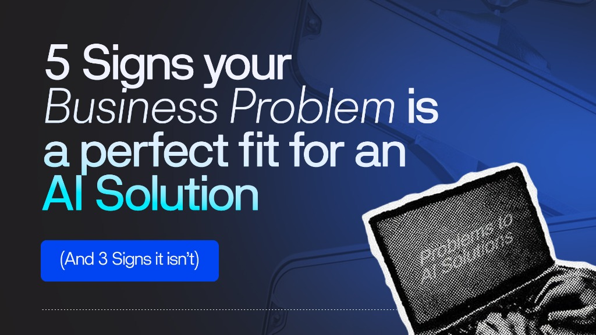

The Question That Should Come Before Every AI Decision
Somewhere between the hype cycle and the horror stories, there is a more useful question most businesses never ask before investing in AI.
Not: "What can AI do?" Not: "Which AI tools are the best?" But simply: "Is my problem actually a good fit for AI?"
It sounds obvious. In practice, it almost never happens. Kovair's 2024 analysis of AI project failures found a consistent pattern: companies adopt AI because a competitor is using it, a vendor is pitching it, or a board member asked about it—not because they mapped a specific business problem to a specific AI capability. That mismatch is the single most reliable predictor of project failure.
"The problem is not the technology. The problem is fit. Many companies adopt AI because they feel they should." — Kovair Business AI Analysis, 2024
This framework exists to close that gap. Below are the five signals Zeffron has identified that verify your business problem is a strong AI candidate, and three signals that tell you it isn’t—at least not yet. At the end, you’ll find a 60-second self-assessment you can run right now.
The 5 Green-Light Signs: Your Problem Is a Good AI Fit
🟢 Sign 1: You Have a High Volume of Repetitive, Rule-Bounded Tasks
This is the most reliable indicator of AI fit. If your team is doing the same cognitive work over and over, with the same inputs, the same decision rules, and the same outputs, AI can almost certainly help.
The test: Could a thoughtful new employee learn to do this task accurately from a written procedure? If yes, AI can likely learn it too. High-volume customer query routing, invoice classification, document data extraction, and standard report generation — these are all strong candidates.
A logistics company processing thousands of freight invoices weekly is spending human attention on a task that has clear, learnable rules. That's a green light. An e-commerce brand handling 2,000 customer support emails a day, 70% of which fall into five question categories, is another.
Green-light check: If this task disappeared tomorrow, would you immediately need to hire someone? If yes, AI may be able to fill exactly that capacity gap.
🟢 Sign 2: You Have High-Volume Customer Queries With Predictable Patterns
Customer-facing query automation is one of the highest-ROI AI use cases in 2025. The key qualifier is predictability. If your customer queries cluster around a bounded set of intents—order status, policy questions, troubleshooting steps, and booking changes—AI handles this well.
The signal to look for: If your customer service team has an informal 'FAQ mental model'—the questions they answer by memory—that is a strong indicator that AI can be trained to handle those same pathways.
Klarna is one of the clearest examples of this in practice. The fintech company's AI assistant took over two-thirds of all customer service chats, handling over 2.3 million conversations and performing the equivalent workload of 700 full-time agents, delivering an estimated $40 million profit improvement in 2024. The problem Klarna solved wasn't complex; it was high-volume and pattern-rich.
Where this breaks: If every customer situation is genuinely unique and requires novel judgment, pure AI automation will frustrate users. A hybrid model where AI handles tier-1 and humans escalate tier-2 often works much better.
🟢 Sign 3: Unstructured Data That Nobody Has Time to Analyse
Data that exists but goes unanalysed is latent business intelligence, and it's one of the highest-leverage AI opportunities. Sales call recordings, customer feedback forms, support transcripts, internal reports, maintenance logs: if you have years of structured or unstructured data and no capacity to extract patterns from it, AI can create value immediately.
A concrete example: Many sales teams record every call. Almost none of them review more than a fraction of those recordings. AI-powered sales intelligence tools can scan the entire library, flag talk-ratio patterns, identify objections that correlate with deal loss, and surface coaching opportunities at scale—work that would take a human analyst months to do manually.
🟢 Sign 4: You Need Decisions Made From Patterns Across Large Datasets
Some business decisions are genuinely pattern-recognition problems at scale. Demand forecasting, fraud detection, churn prediction, predictive maintenance: these are tasks where a human simply cannot hold enough variables in their head simultaneously to match what a well-trained model can do.
If your team is already making decisions that rely on historical data and trend analysis, but the process is slow, inconsistent, or happens too infrequently to be useful, AI can systematise and accelerate that judgment.
🟢 Sign 5: Your Process Has Clear, Testable Inputs and Outputs
AI systems are significantly easier to build, validate, and trust when the problem has a well-defined input, a knowable output, and a way to measure whether the output is correct. Classification tasks, scoring models, extraction jobs, and routing systems all meet this bar.
This is the underrated criterion. If you cannot define what 'correct' looks like for a given output, you cannot evaluate whether your AI is performing. Ambiguous success criteria are a warning sign, not because the problem is wrong, but because the scoping work hasn't been done yet.
Before any AI build begins at Zeffron, we ask clients: "If the AI processes 1,000 records this week, how will you know whether it performed well?" If the answer is clear and measurable, the project has a strong foundation.
The 3 Red-Light Signs: Your Problem Isn't a Good AI Fit Right Now
This section is as important as the green lights. Not every business problem should be solved with AI. Proceeding without addressing these is a reliable path to a failed project.
🔴 Sign 1: The Problem Requires 100% Accuracy
AI systems are probabilistic. They are right most of the time, but not all of the time. For use cases where any error creates significant harm—such as final medical diagnoses, binding legal decisions, and safety-critical control systems—AI should not be the decision-maker. It can assist, but a human must own the outcome.
This is also true for high-stakes financial transactions where the cost of a single mistake exceeds the value AI creates.
🔴 Sign 2: The Data Doesn't Exist Yet
This is the most common reason AI projects fail silently. A model trained on bad data makes bad decisions. A business that doesn't have sufficient historical data for the pattern it wants to learn cannot shortcut that requirement with a clever algorithm.
This is not a permanent red light. It is a sequencing signal. Data infrastructure work comes first. Once the data exists, is clean, and is accessible, the AI layer becomes far more tractable.
🔴 Sign 3: Human Empathy Is the Core Value
Grief counselling, complex negotiation, executive relationship management, high-stakes creative collaboration: these are not AI problems. They are human problems.
The test: would your customer feel the quality of the interaction drop significantly if they knew it was AI? If yes, that is important information. AI can support, prepare, and summarise around these interactions, but it should not front them.
The 60-Second Self-Assessment
Run through the following questions for the specific business problem you're considering. Answer yes or no. Be honest.
Green-Light Questions:
- Is this task performed more than 50 times per week?
- Could a new employee learn to do it accurately from a written procedure?
- Do you have at least 12 months of historical data related to this process?
- Can you define what a 'correct' output looks like?
- Would reducing errors or processing time here create measurable business value?
Red-Light Questions:
- Does a single error in this process cause significant harm or regulatory risk?
- Is the data you'd need to train or run this system unavailable or unreliable?
- Is human presence itself a core part of what makes this interaction valuable?
Scoring guide: If you answered yes to 4 or more green-light questions and no to all red-light questions, your problem is likely a strong AI candidate. If you hit a red light, that isn't a dead end. It's a sequencing question. Data infrastructure might need to come first.
Not sure where to start with AI?
Book a free 30-minute AI Blueprint Session. We'll diagnose your workflow and map out exactly how custom AI can save costs or drive revenue for your product.
Book Your Free Blueprint